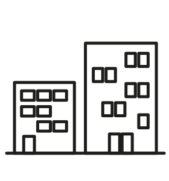

Avec 7 430 ventes d’appartements au 2e trimestre 2026, l'activité augmente de +20 % à Paris sur un an. Toutefois, cette hausse doit être relativisée, le 2e trimestre 2025 ayant été marqué par un ralentissement de l’activité après le rebond observé au 1er trimestre 2025 lié à l’anticipation de la hausse des droits de mutation. Au 2e trimestre 2026, le prix des appartements parisiens sont restés stables autour de 9 560 € le m².
Evolution des volumes de ventes de logements anciens
Entre 2e trimestre 2025
et
2e trimestre 2026
Paris : +20%
Petite couronne : +11%
Grande couronne : +4%
Ile-de-France : +10%
D’après les projections de prix issus des avant-contrats, le prix des appartements parisiens devrait rester au même niveau jusqu’au 3e trimestre 2026.
Evolution du prix au m² des appartements anciens
Entre 2e trimestre 2025
et
2e trimestre 2026

Paris : +0,6%
Petite couronne : -0,1%
Grande couronne : +0,1%
Ile-de-France : +0,3%
Source : ADSN-BIENS Notaires du Grand Paris - Données mises à jour le 04/11/2026